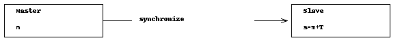

Time synchronization over the air¶
In a network of multiple devices, it is often required that all participants operate on a common time base. This document describes how to synchronize multiple CC2640R2F devices using the proprietary PHY.
In our example we have a master and a slave and we want to synchronize the slave clock to the master’s clock. Both clocks run at the same tick rate, but the slave clock has an initial offset relative to the master. Assuming that and specify absolute timestamps with index on the master and the slave, respectively, we get the relationship:
(1)¶
Initially, the slave doesn’t know and hence, is always different from the master’s time .
As the timer domain, we choose the radio timer RAT on the RF core which provides 32 bit timestamps at 4 MHz (4 ticks per µs). RAT timestamps can be used as absolute start and end triggers for radio operation commands.
One-way synchronization example¶
In order to get , it would be enough to send one message at a timestamp from the master to the slave as shown in the sequence chart below:
Figure 46. Sequence chart of the one-way time synchronization process.
The slave would receive the message after a certain delay at and could deduce by the following formula:
(2)¶
is the time of the receiver signal Syncword found. The transmission offset contains the time to bring up the RF front-end, to calibrate the synthesizer and to send the packet preamble and the syncword. The time of flight (TOF) is very small compared to that value and can be ignored. is a fixed value and depends on the chosen RF settings. It must be measured/only once during development and is then compiled into the application.
A two-way synchronization algorithm¶
This section describes an indirect approach that doesn’t require to measure . But it can also be used to deduce indirectly. We use an algorithm similar to the Network Time Protocol.
The following sequence diagram shows the synchronization process.
Figure 47. Sequence chart of the two-way time synchronization process.
The slave sends a synchronization request to the master at and sets as an absolute start trigger for the TX command.
The master receives the message after at . This is the timestamp that is appended as meta data to the packet and specifies the time when the sync word was found:
(3)¶
After a short time , the master responds to the request with a reply message at . It sets the TX command start trigger to and includes into the packet payload as well:
(4)¶
When the client receives the reply at , it has the following timing information and can calculate the initial clock offset :
- : Request sent by the client
- : Request received by the master
- : Reply received by the client
- : A fixed delay for message processing on the master
From (1), we know that:
(5)¶
We do not know , but we know its offset to which is :
(6)¶
(7)¶
We still do not know , but we know that it is included into the round-trip time as follows:
(8)¶
With the help of (8) we can rewrite (7) to:
(9)¶
and finally obtain . This value must now be added to any further RF operation on the client.
Sending and receiving timestamp messages¶
This section provides code snippets for implementing the above algorithms.
When sending a timestamp message at a certain time, we use txTimestamp as
an absolute start trigger, but include it also into the packet payload:
// Convenience macro
#define RF_convertMsToRatTicks(milliseconds) \
(((uint32_t)(milliseconds)) * 1000 * 4)
// Exported from SmartRF Studio
rfc_CMD_PROP_TX_t txCommand;
// Set a time in the near future (5ms)
uint32_t txTimestamp = RF_getCurrentTime() + RF_convertMsToRatTicks(5);
// Set txTimestamp as an absolute start trigger
txCommand.startTrigger.triggerType = TRIG_ABSTIME;
txCommand.startTime = txTimestamp;
// Include it also into the payload
uint32_t payload[1] = { txTimestamp };
txCommand.pPkt = (uint8_t*)&payload[0];
txCommand.pktLen = sizeof(payload);
When receiving this packet, the receiver must read the timestamp from the
packet payload, but must also configure the RF core to append a timestamp to
each received packet. This is the time when the RF core raises the signal
“Synchronization found” and we choose the name rxTimestamp:
// Exported from SmartRF Studio
rfc_CMD_PROP_RX_t rxCommand;
// Append RX timestamp to the payload
RF_cmdPropRx.rxConf.bAppendTimestamp = 1;
// The code to execute the RX command and to setup
// the RX data queue is not shown here.
// When reading the packet content from the
// RX data queue, rxTimestamp is behind the payload:
rfc_dataEntryGeneral_t* currentDataEntry = RFQueue_getDataEntry();
// Assuming variable length
uint8_t packetLength = *(uint8_t*)(¤tDataEntry->data);
uint8_t* packetDataPointer = (uint8_t*)(¤tDataEntry->data + 1);
uint32_t rxTimestamp;
memcpy(&rxTimestamp, &packetDataPointer + packetLength, 4);
// The TX timestamp is found in the payload
uint32_t txTimestamp;
memcpy(&rxTimestamp, packetDataPointer + packetLength, 4);